哈喽，大家好，我是阿胖~
像这样一个3D交互演示文件，竟然是一个skill一句话做出来的你敢信？
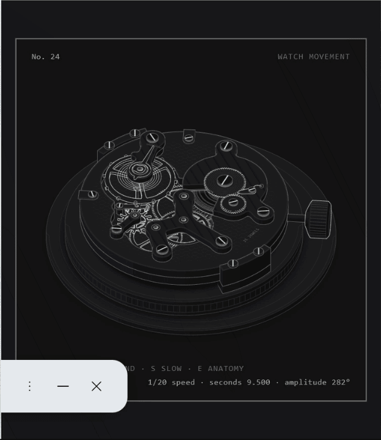
细节构造一目了然，拖表冠上弦、按 S 慢放、按 E 掀夹板，交互也很丝滑
怎么做到的，这个Skill又叫什么名字？接下来阿胖分享给大家。
熟悉阿胖的小伙伴都知道，我只要发现了好东西，都会第一时间来分享给大家。
这不，最近又发现了一个好的skill，这个真的有点离谱了，我都想把他叫逆天skill了！
他叫 Anatomy ，我写这篇文章的时候，已经拿到了 2.1 万多颗 Star。
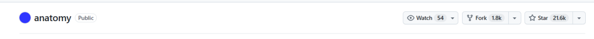
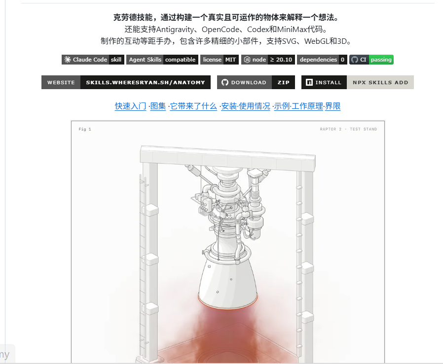
比如，你想搞明白一台机械表内部到底是怎么运转的，正常情况下，你可能会去搜一张机械表的结构图。
然后看着里面密密麻麻的齿轮、发条、擒纵机构，试图在脑子里把它们拼起来，看了半天，零件倒是认识了不少，但它们究竟是怎么配合起来工作的，还是一头雾水。
如果 AI 能直接给你做出一块可以交互的机械表，你不仅能看见里面的零件，还能通过操作去观察它们之间的运动关系。
开头就是这个skill做出来的成品。
以前只能靠脑补的东西，现在直接摆在眼前，这一下，学习复杂知识的感觉就不太一样了？
当然，开头那个是官方案例，那我们的 Workbuddy 加这个 skill 做出来的效果是不是也是类似的呢，这个skill到底有没有吹牛呢？
接下来，阿胖就测给大家看。
实测1：咖啡机
刚好，我最近对咖啡机比较感兴趣，因为最近挺爱喝咖啡的，但是都只是直接在外面买，自己还从来没有用咖啡机磨过。
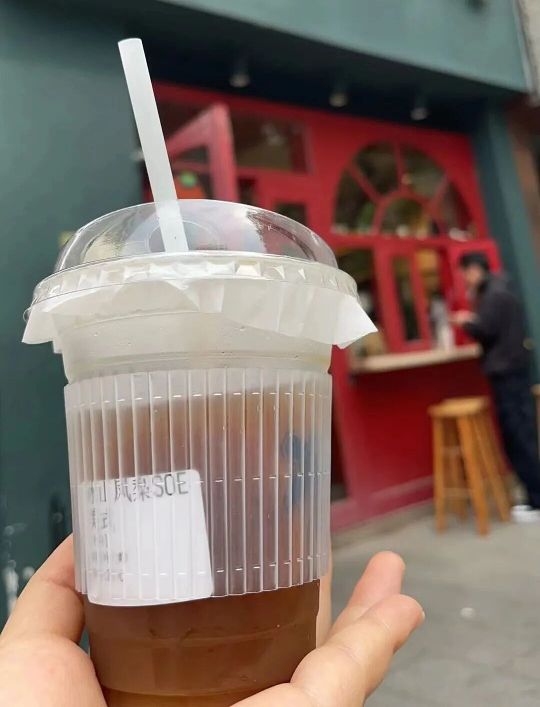
我就挺好奇这个咖啡机的工作原理逻辑到底会是什么样子的。
他是先怎么样，再怎么样，然后怎么样变成一杯咖啡的。
如果我去看一张静态的构造图，那估计会给我看哭。我只是想了解一下，看起来得多煎熬啊，还得自己想象整个过程。
刚好我有这个 skill，所以我就拿它试了一下，看能不能把它做成立体的。
请使用 Anatomy Skill，制作一台热交换式意式咖啡机的交互式立体演示。机器需要展示锅炉、热交换管、泵、冲煮头、蒸汽棒和压力表等主要部件。请让机器的内部结构清晰可见，并通过交互展示萃取时水流经过的路径。用户可以触发一次萃取，观察水流的运动过程，并看到相关状态变化。输出一个独立 HTML 页面，优先保证结构清楚、交互有效、工作原理合理，再追求精致的视觉效果。完成后检查页面能否运行，并指出哪些部分只是示意，哪些部分有实际逻辑支撑。
你看，我把上面这段提示词发给了workbuddy，跑得还挺久，跑了50分钟才跑出来。
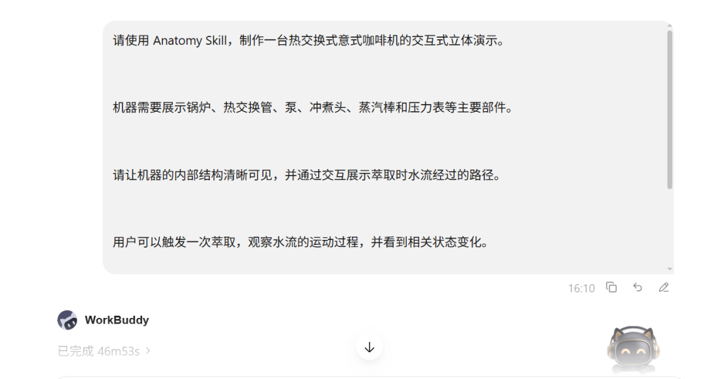
来给大家看看实测结果。
刚开始看到这个页面的时候，说实话，我第一反应是：嗯？这玩意真的是咖啡机吗？
因为它不是那种特别写实、特别生活化的咖啡机长相，有点像把一台热交换式意式咖啡机，拆成了一个可以观察内部结构的立体模型。
我多看了一会儿，又按它给的交互玩了几下之后，慢慢就看明白了：
这是真的在尝试把热交换式意式咖啡机的工作逻辑演示出来。
先说我最关心的部分：它到底有没有把“咖啡是怎么出来的”这件事讲清楚？
说实话，因为我不是特别懂这个结构，所以我查了一会儿资料，了解了一些基本信息，感觉还是有点抽象啊，但是再看了看这个skill做的，我感觉他是把咖啡怎么出来这件事演示清楚了。
你看啊，我在电脑上按下 B，或者点击页面里的 BREW 按钮，它就会开始模拟一次完整的萃取过程。
这时候，页面上会显示一条被点亮的水路：水箱 → 泵 → HX 盘管 → 冲煮头 → 手柄 → 杯
这条路线其实就是一台热交换式意式咖啡机萃取时，水真正走过的路径。
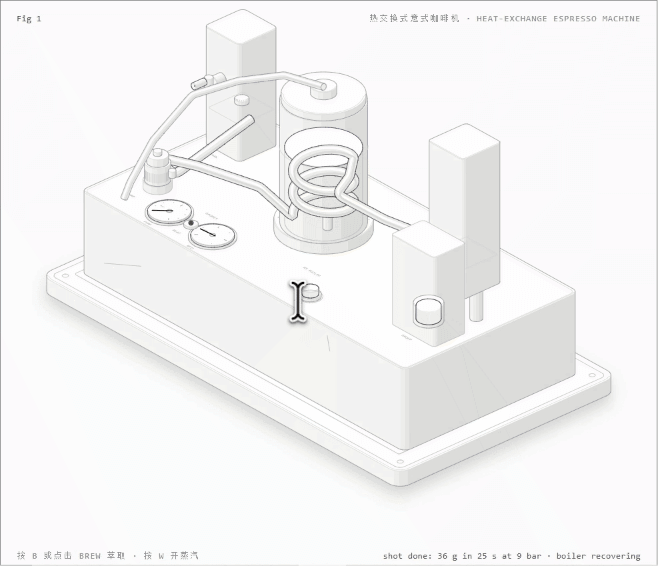
原来热交换式意式咖啡机，并不是“锅炉里的水直接拿去冲咖啡”，它会让新鲜的进水先经过锅炉里的热交换管，被间接加热之后，再去萃取。
还有一些细节挺有意思的。
在萃取过程中，页面右下角会实时显示一些状态信息，比如：
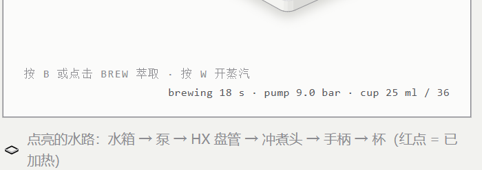
有时候我就在想，这玩意儿它是不是就是随便给我们做了一个东西，其实逻辑是站不住脚的，后面我观察到一个细节，问了一下AI，发现他做出来的这些东西，几乎是完全符合现实生活中的物理逻辑规律的。
比如这个锅炉并不是一直无脑加热的，而是在一个压力区间里来回波动。
WorkBuddy 这里做的是一个类似压力开关的逻辑：大概在 1.05 bar 到 1.25 bar 之间循环。
压力低了，就加热，压力到了，就停一下，这其实就很接近很多传统 HX 机的工作方式了。
实测2：物理老师的教学演示
咖啡机测完之后，我又琢磨了一下。
如果这个 Skill 只能把一台机器的零件搭出来，那确实挺酷，但好像还没完全发挥出它的能力。
除了机器，它能不能把一些更抽象的知识，也直接做出来？
比如，物理课上的水波实验。
这个东西大家应该都不陌生，水波的传播、反射、衍射，这些知识我们上学的时候都学过。
但你想想看，课本上一般怎么讲？
画几圈波纹，放一块挡板，再画几条线，告诉你波遇到障碍物会反射，穿过狭缝会发生衍射。
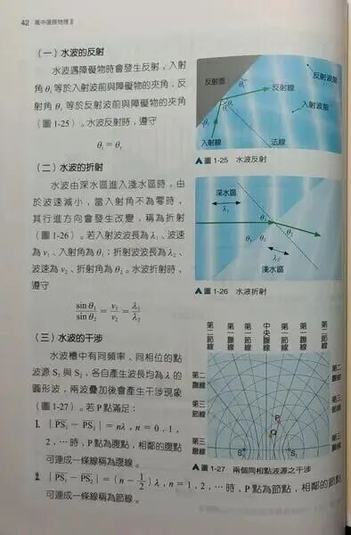
嗯，你说的对，知识点了解了，但还是感觉抽象。。
那我就想试试，能不能让 Anatomy 这个skill直接把这个实验装置做出来，让我们自己动手观察波是怎么传播的。
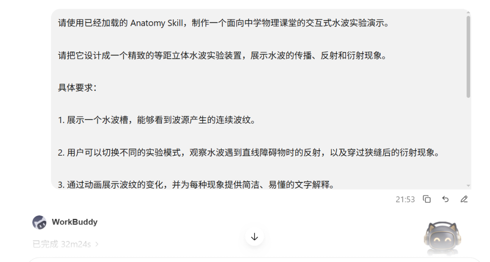
我给workbuddy发了这段提示词，这次花的时间更少，只花了32分钟。
请使用已经加载的 Anatomy Skill，制作一个面向中学物理课堂的交互式水波实验演示。请把它设计成一个精致的等距立体水波实验装置，展示水波的传播、反射和衍射现象。具体要求：1. 展示一个水波槽，能够看到波源产生的连续波纹。2. 用户可以切换不同的实验模式，观察水波遇到直线障碍物时的反射，以及穿过狭缝后的衍射现象。3. 通过动画展示波纹的变化，并为每种现象提供简洁、易懂的文字解释。4. 提供可操作的按钮，让用户能够启动、暂停和重置实验。5. 整体视觉要有立体感，结构清晰，适合用在教学演示中。6. 输出一个可以直接在浏览器中打开的独立 HTML 页面。7. 完成后检查页面能否正常运行、交互是否有效，并核对演示是否符合基本物理原理。注意：这是一份教学演示，不要求进行精确的流体力学数值模拟。对于简化或示意的部分，请明确标注。
你看，它直接搭出来了一个立体的水波实验台，上面有水槽、造波器，还有一圈一圈向外扩散的蓝色波纹。
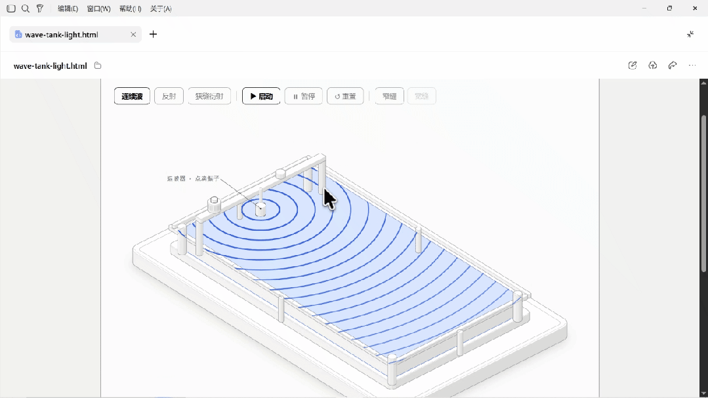
而且它不是一张静态图片，顶部有连续波、反射、狭缝衍射等不同模式，还能启动、暂停和重置，我们可以自己切换不同的实验条件，观察波纹发生什么变化。
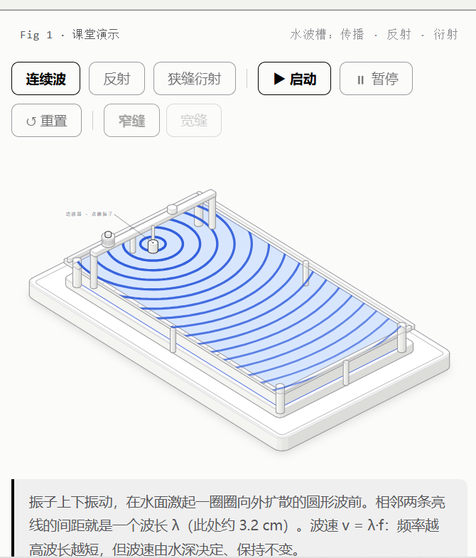
这就有点意思了。
因为这次跟咖啡机不一样，咖啡机主要是让你看见机器内部的结构，而水波实验要展示的是一个物理现象是怎么发生的。
它要把原本只能靠想象理解的东西，直接演示给你看。
比如，我们先来看看水波反射。
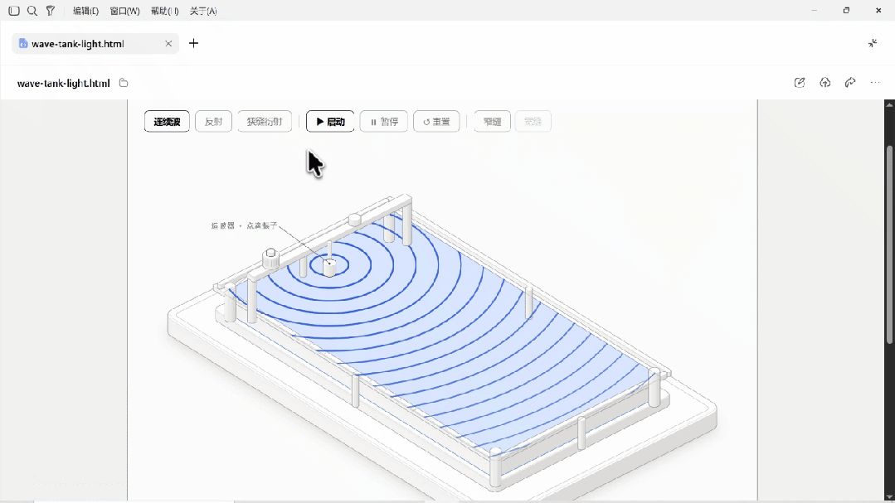
点击反射模式之后，水槽里会出现一块挡板。
波纹传播到挡板附近，就会出现反射波，画面里还能看到入射波和反射波的波前关系。
这时候，你就可以很直观地观察到，波遇到障碍物之后，并不是直接消失了，而是会发生反射。
其实我感觉应这个装置应该还能看出更多东西，但奈何我的物理水平有限。如果看文章的朋友有物理老师，肯定能看出更多名堂来，哈哈。
我觉得如果咱是一名物理老师，平时讲这些知识点，除了课本上的图片和自己画的图之外，又多了一个选择。
可以把这个页面投到屏幕上，让学生自己切换反射和衍射模式，观察波纹的变化，制作起来也非常方便，一句话就搞定。
举一反三，其他需要演示抽象内容、复杂知识的老师，是不是也可以用这个skill来做出一个3D交互演示的界面呢。
折腾完这两个实测，我来跟大家聊聊自己的真实感受。
Anatomy 这个 Skill，我觉得确实挺有意思的，但我寻思了一下，它可能也不是所有人都用得上。
如果你是老师，平时讲课总有一些知识点，自己明明知道怎么回事，可一到课堂上，就得画图、写板书，讲半天学生还是一脸懵。
如果你是科普博主，想把一个复杂的原理讲清楚，手里却只有几张静态图片。
又或者你是程序员，想给别人解释一个技术机制，光靠文字和流程图，自己写起来都觉得费劲。
那我觉得，这个 Skill 真的值得你试试。
因为它能帮你把那些原本只能靠想象理解的东西，尝试做成一个可以观察、可以操作的演示。
当然，如果你平时用 AI 就是写写文章、总结文件、生成几张图片，那我觉得暂时也没必要专门折腾这个。
你看完可能觉得挺酷，收藏一下，然后就没有然后了。。。毕竟，工具再厉害，也得有用武之地才行。
还有一个很现实的问题。
页面能动，不代表里面的原理就一定完全正确，这个skill里面也明确了。
就像刚才的咖啡机，它能模拟泵压、锅炉压力和出液量的变化，但这些数据是按照代码里设定的模型计算出来的。
水波实验也是一样，它用几何方式构造波纹，通过镜像法表现反射，拿来理解基本规律挺直观，但它并没有精确模拟真实水体里的全部运动。
我自己的物理水平也就那样，真要拿它去研究复杂的物理问题，我肯定不敢直接相信结果。
ok，最后再来说说如何安装。
最简单的方法是直接把Anatomy这个名字发给你的workbuddy让他去找到并且帮你安装。
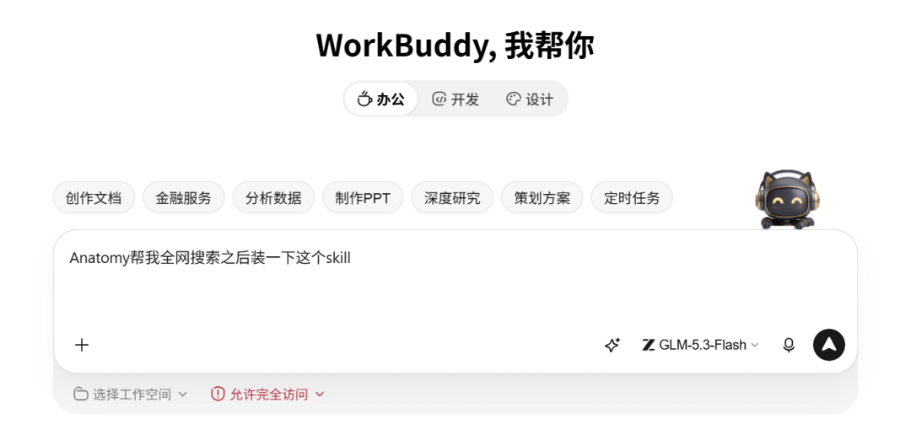
这里跟大家强调一个细节。因为之前有小伙伴总是跟我说找不到我分享的一些 skill，我一看，原来他们是在 Workbuddy 的内置技能市场里找，当然找不到。
咱们让workbuddy去找这个技能的时候，要让他去全网找。
以上，既然看到这里了，如果觉得这篇对你有用，随手点个赞、在看、转发三连吧～欢迎关注阿胖，我会持续分享更多实用、有趣的AI干货和实操经验～
如果想第一时间收到推送，也可以给我个星标⭐～